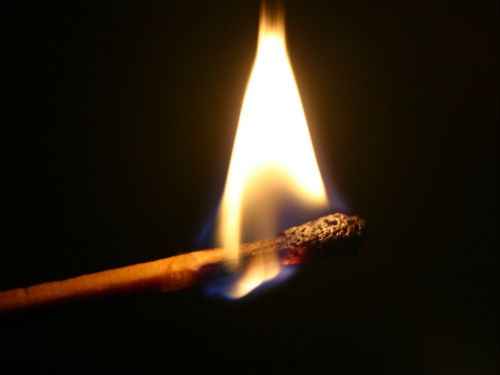

The control of fire was the first and perhaps greatest of
humanity’s steps towards a life-enhancing technology.
To early man, fire was a divine gift randomly delivered in the form of lightning, forest fire or burning lava. Unable to make flame for themselves, the earliest peoples probably stored fire by keeping slow burning logs alight or by carrying charcoal in pots.
How and where man learnt how to produce flame at will is unknown. It was probably a secondary invention, accidentally made during tool-making operations with wood or stone. Studies of primitive societies suggest that the earliest method of making fire was through friction. European peasants would insert a wooden drill in a round hole and rotate it briskly between their palms This process could be speeded up by wrapping a cord around the drill and pulling on each end.
The Ancient Greeks used lenses or concave mirrors to concentrate the sun’s rays and burning glasses were also used by Mexican Aztecs and the Chinese.
Percussion methods of fire-lighting date back to Paleolithic times, when some Stone Age tool-makers discovered that chipping flints produced sparks. The technique became more efficient after the discovery of iron, about 5000 years ago In Arctic North America, the Eskimos produced a slow-burning spark by striking quartz against iron pyrites, a compound that contains sulphur. The Chinese lit their fires by striking porcelain with bamboo. In Europe, the combination of steel, flint and tinder remained the main method of fire-lighting until the mid 19th century.
Fire-lighting was revolutionised by the discovery of phosphorus, isolated in 1669 by a German alchemist trying to transmute silver into gold. Impressed by the element’s combustibility, several 17th century chemists used it to manufacture fire-lighting devices, but the results were dangerously inflammable. With phosphorus costing the equivalent of several hundred pounds per ounce, the first matches were expensive.
The quest for a practical match really began after 1781 when a group of French chemists came up with the Phosphoric Candle or Ethereal Match, a sealed glass tube containing a twist of paper tipped with phosphorus. When the tube was broken, air rushed in, causing the phosphorus to self-combust. An even more hazardous device, popular in America, was the Instantaneous Light Box — a bottle filled with sulphuric acid into which splints treated with chemicals were dipped.
The first matches resembling those used today were made in 1827 by John Walker, an English pharmacist who borrowed the formula from a military rocket-maker called Congreve. Costing a shilling a box, Congreves were splints coated with sulphur and tipped with potassium chlorate. To light them, the user drew them quickly through folded glass paper.
Walker never patented his invention, and three years later it was copied by a Samuel Jones, who marketed his product as Lucifers. About the same time, a French chemistry student called Charles Sauria produced the first “strike-anywhere” match by substituting white phosphorus for the potassium chlorate in the Walker formula. However, since white phosphorus is a deadly poison, from 1845 match-makers exposed to its fumes succumbed to necrosis, a disease that eats away jaw-bones. It wasn’t until 1906 that the substance was eventually banned.
That was 62 years after a Swedish chemist called Pasch had discovered non-toxic red or amorphous phosphorus, a development exploited commercially by Pasch’s compatriot J E Lundstrom in 1885. Lundstrom’s safety matches were safe because the red phosphorus was non-toxic; it was painted on to the striking surface instead of the match tip, which contained potassium chlorate with a relatively high ignition temperature of 182 degrees centigrade.
America lagged behind Europe in match technology and safety standards. It wasn’t until 1900 that the Diamond Match Company bought a French patent for safety matches — but the formula did not work properly in the different climatic conditions prevailing in America and it was another 11 years before scientists finally adapted the French patent for the US.
The Americans, however, can claim several “firsts” in match technology and marketing. In 1892 the Diamond Match Company pioneered book matches. The innovation didn’t catch on until after 1896, when a brewery had the novel idea of advertising its product in match books. Today book matches are the most widely used type in the US, with 90 percent handed out free by hotels, restaurants and others.
Other American innovations include an anti-after-glow solution to prevent the match from smouldering after it has been blown out; and the waterproof match, which lights after eight hours in water.